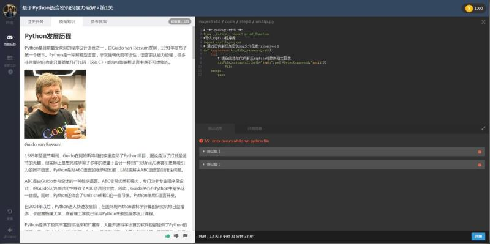

开源知识库
开源参与者的智库
开源知识库旨在通过一套文档、工具、系统帮助开源参与者更好地使用开源软件、参与开源软件的开发、推动开源社区及开源生态的形成与发展。知识库包含了开源治理、开源软件工程服务、开源实训三个版块。

开源治理
开源治理服务于开源项目、开源社区和开源生态的建设和发展，为开源参与者提供开源协议、开源参与协作模式、开源商业模式、开源教育等方面的解析、指导和建议。
本版块当前包括以下服务：

开源实训
开源实训围绕开源技术，为开发者和使用者提供集知识讲解、案例解析、开发实战、运行部署、实时评测、综合评估等于一体的智能化实训云服务，帮助他们迅速掌握核心开源技术，提升个人创新实践能力。
本版块当前包括以下服务：